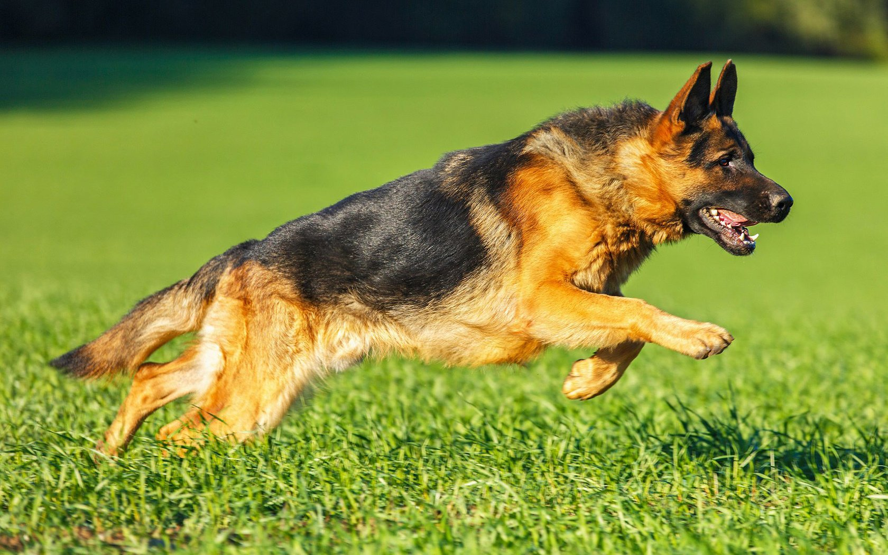
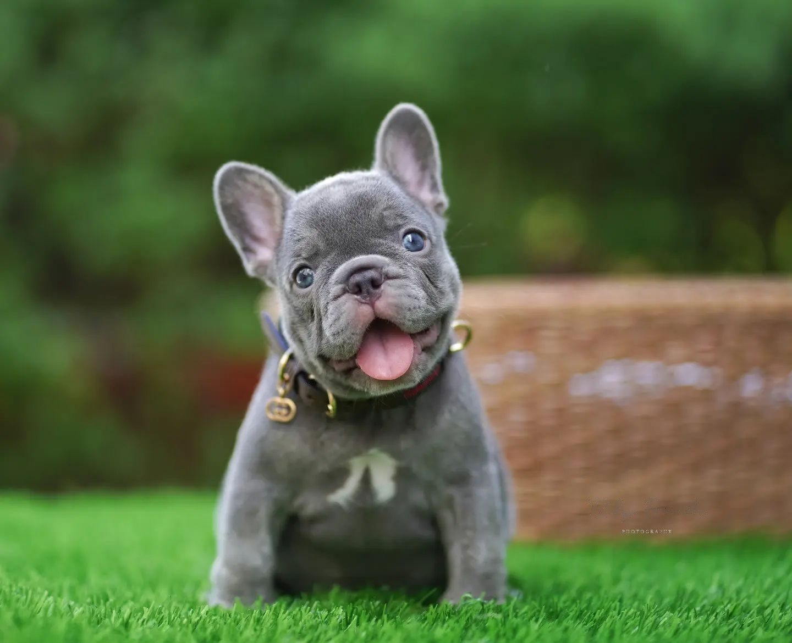
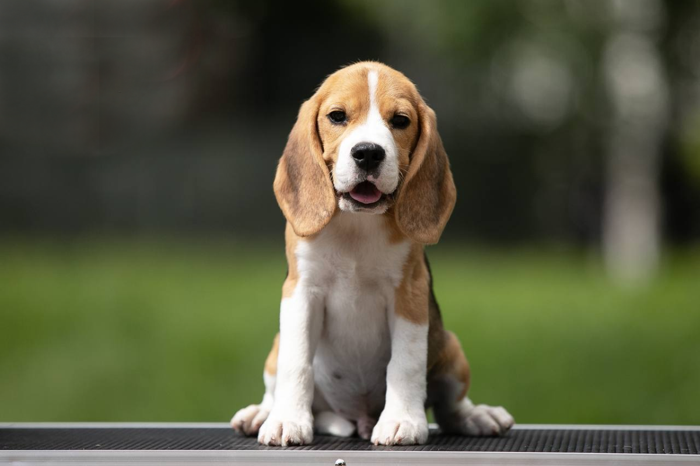
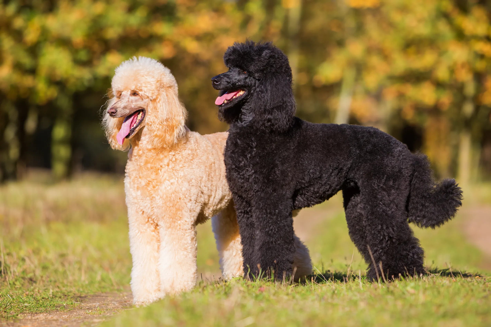
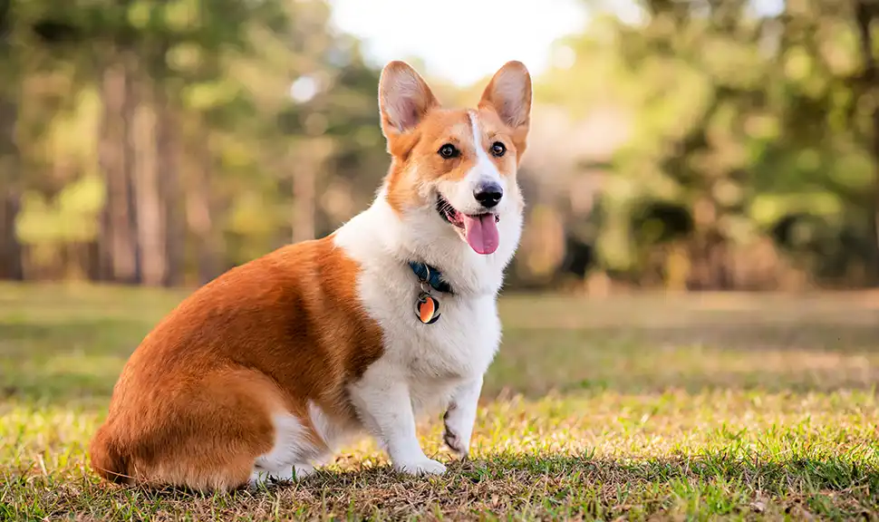
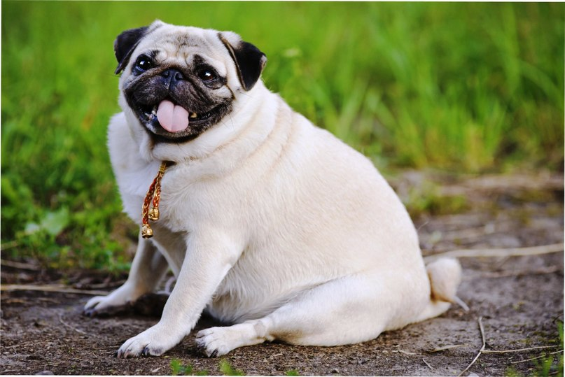

1. Лабрадор-ретривер
Дружелюбные, энергичные собаки. Отличные компаньоны и помощники.

2. Немецкая овчарка
Умные, преданные собаки. Широко используются в службах спасения.

3. Золотистый ретривер
Добродушные, терпеливые собаки. Отлично ладят с детьми.

4. Французский бульдог
Компактные, весёлые собаки с характерной внешностью.

5. Такса
Смелые, энергичные собаки с удлинённым телом.

6. Сибирский хаски
Выносливые, дружелюбные собаки с густой шерстью.

7. Бигль
Весёлые, любознательные собаки с отличным нюхом.

8. Пудель
Умные, легко обучаемые собаки с кудрявой шерстью.

9. Вельш-корги
Активные, сообразительные собаки с короткими лапами.

10. Ротвейлер
Сильные, уверенные собаки с развитым защитным инстинктом.

11. Доберман
Элегантные, бдительные собаки с сильным характером.

12. Померанский шпиц
Маленькие, пушистые собаки с жизнерадостным характером.

13. Английский бульдог
Спокойные, добродушные собаки с характерной мордой.

14. Мопс
Компактные, обаятельные собаки с выразительной мордочкой.